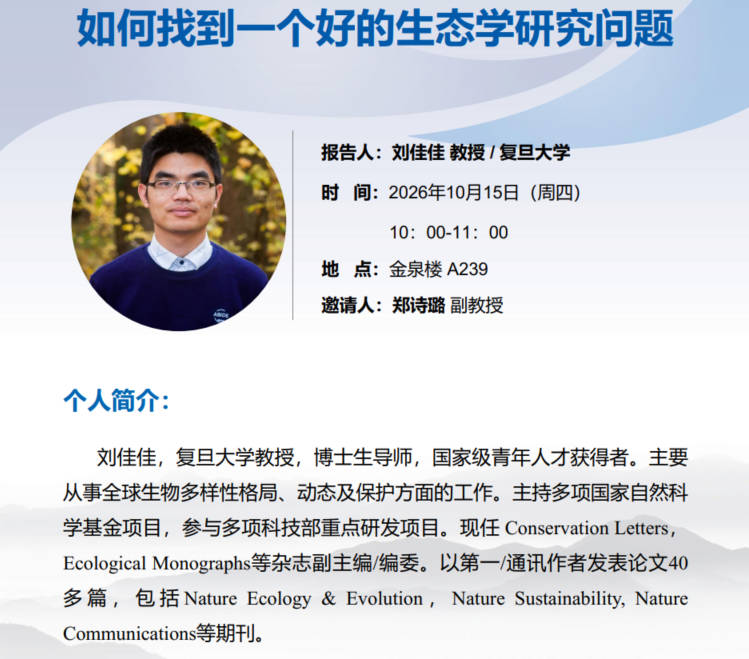
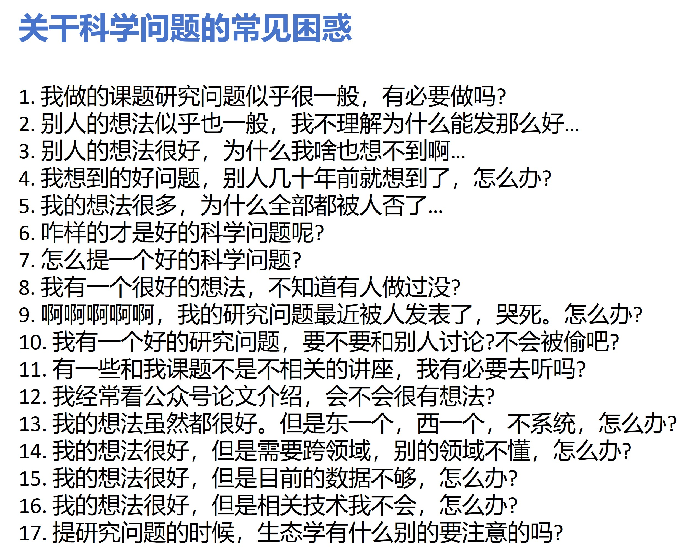

A fantastic talk by Jiajia Liu from Fudan University
How to find a good ecological research question?
Professor Jiajia Liu, an excellent ecologist from Fudan University, was invited by Shilu to give us a lecture today in our college, talking about a very general proposition. He was the co-supervisor of Shilu postdoctal experience. After this lecture, I begin to understand the reason why Shilu can be a good ecologist and change her research interests from plant to bird.
“How to find a good ecological research question?” could be a very basic thing during our research, not only at the beginning of period of postgraduate but also during our academic life. His talk showed us three aspects that could be a good research question. I summarized as: 1. Concept challenge; 2. Observation combined with critical thinking; 3. Broaden views.
Science is still advancing by so many scientist efforts. Maybe it is very difficult for us to come up with a quite brand new concept, but it is much more easier to challenge the older concept and reconsider the validity. The concept or theory is not always correct. Try to truly understand what does it mean in our system. (For example, woody encroachment is increasing across the globe and so does in coastal wetland. However, it is not suitable in southern coast of China due to the invasion of Spartina alterniflora. What is the mechanism behind that driving this trend?) Jiajia said, the “side-effect” of this part promote his Review paper. It could not be the side-effect, but the ability to summarize the research context and frontiers, which should be a very useful skill of storytelling.
Field observation is always necessary. I really enjoy go to nature, here go muddy for me. I can always find something interesting that is happening in the coastal wetland. I just want to know how the plant grow, why they can be so adaptive to the environment, which should be the intelligence of plant that we still unknown. Together with the ability above that we are familiar with the concept, we could be more curious about what is happening in nature. But what more important thing is that, we need to think about the phenomenon and try to collect data and continue verifying. Jiajia said, the “side-effect” of this part is data analysis. We need analysis to verify and strengthen our hypothesis, but for me, to be honest, very poor.
Interdisciplinary research often gives us inspiration. My co-supervisor told me, you should not only interested in your own research. This two views should be the same. Just like, we should be curious about not only coastal wetland, but also terrestrial ecosystem. On the other hand, academic life is not all of our lives, we can be interested in art, music, or any other aspect. They could be the origin and strength of our inspiration and life. Jiajia said, the “side-effect” of this part is that the research maybe not so systematic. He has published a lot of papers from different aspects, and I believe that he has the ability to summarize these works together under the accumulation of such plenty of experience. That is the ecologist should be like.

